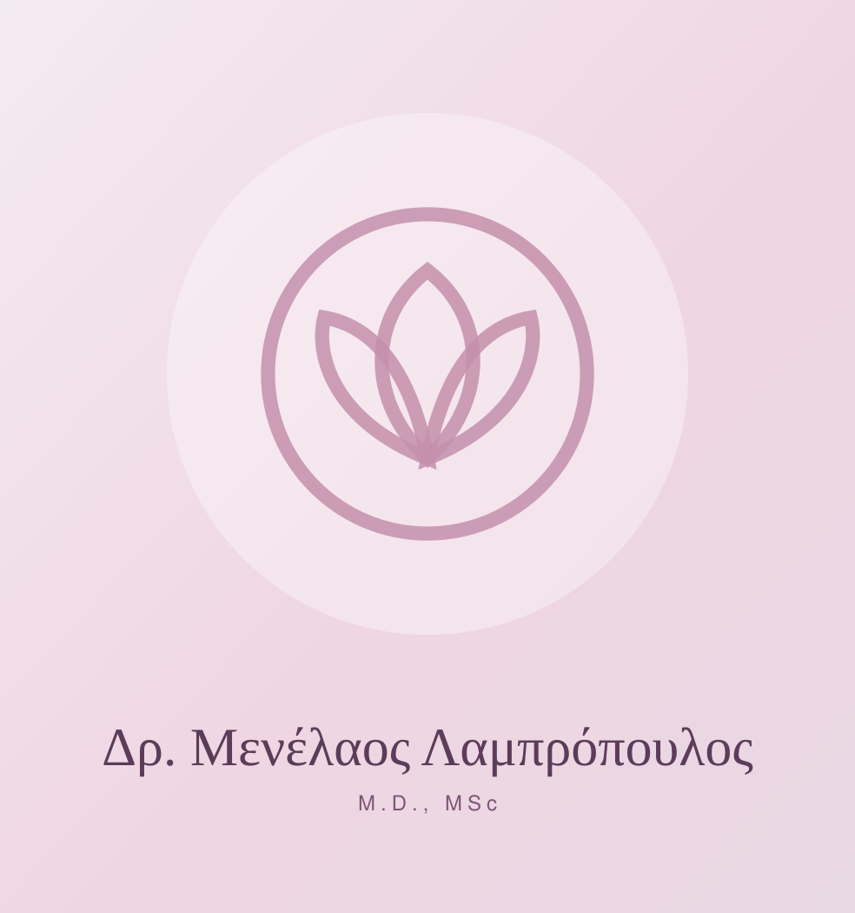
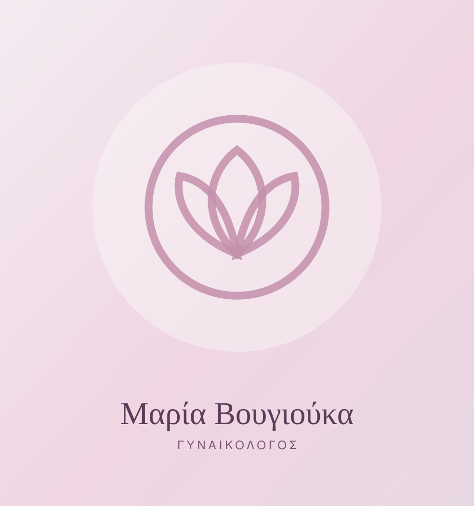

Γυναικολόγος
Ο Ιατρός
Δρ. Μενέλαος Λαμπρόπουλος
M.D., MSc · Μαιευτήρας – Χειρουργός Γυναικολόγος
Ο Δρ. Μενέλαος Λαμπρόπουλος είναι Μαιευτήρας – Χειρουργός Γυναικολόγος με πολυετή κλινική και χειρουργική εμπειρία στη Θεσσαλονίκη, τόσο στον δημόσιο όσο και στον ιδιωτικό τομέα.
Υπηρετεί ως Συντονιστής Διευθυντής στο Νοσοκομείο «Ο Άγιος Δημήτριος» Θεσσαλονίκης, θέση που συνδυάζει την καθημερινή κλινική πράξη με την οργάνωση και εποπτεία της λειτουργίας της κλινικής.
Παράλληλα διατελεί Πρόεδρος του Χειρουργικού Τομέα και Πρόεδρος του Επιστημονικού Συμβουλίου του νοσοκομείου — ρόλοι που αντανακλούν τόσο τη χειρουργική του εμπειρία όσο και τη διαρκή ενασχόλησή του με την επιστημονική τεκμηρίωση και την εκπαίδευση.
Στο ιατρείο του, στην Εγνατίας 74, μεταφέρει την ίδια νοσοκομειακή αυστηρότητα σε ένα πλαίσιο προσωπικό και ήρεμο: ραντεβού διάρκειας 30 λεπτά, αναλυτική εξήγηση κάθε εύρηματος και θεραπευτικό πλάνο που αποφασίζεται από κοινού.

Γυναικολόγος
Η Ιατρός
Μαρία Βουγιούκα
Μαιευτήρας – Γυναικολόγος
Η Μαρία Βουγιούκα είναι Μαιευτήρας – Γυναικολόγος και συνεργάζεται στο ιατρείο της Εγνατίας 74, καλύπτοντας όλο το φάσμα της γυναικολογικής και μαιευτικής φροντίδας.
Η παρουσία δύο ιατρών στο ίδιο ιατρείο σημαίνει πρακτικά μεγαλύτερη διαθεσιμότητα ραντεβού, συνέχεια στην παρακολούθηση και τη δυνατότητα κάθε γυναίκα να επιλέξει τον ιατρό με τον οποίο νιώθει πιο άνετα — ιδίως στον τακτικό προληπτικό έλεγχο και στην παρακολούθηση της εγκυμοσύνης.
Τα περιστατικά συζητούνται από κοινού, ώστε το θεραπευτικό πλάνο να προκύπτει από τη σύνθεση δύο κλινικών ματιών.
Η Φιλοσοφία μας
Η ιατρική δεν είναι μόνο διάγνωση και θεραπεία — είναι και χρόνος. Χρόνος να ακούσεις, να εξηγήσεις και να αποφασίσεις μαζί με την ασθενή.Δρ. Μενέλαος Λαμπρόπουλος · Μαιευτήρας – Χειρουργός Γυναικολόγος